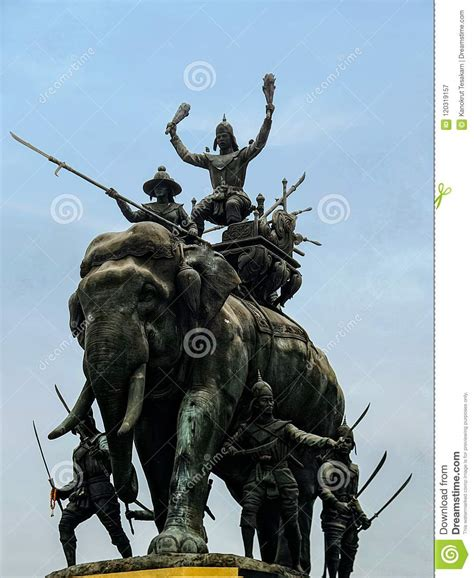

Elephants might be the much-loved symbol of Thailand today, yet in the past, they were used as instruments of war. In fact, a tradition of single combat on elephant back first emerged in Thai history in the 13th century during the Sukhothai period. The origin of the elephant duel is still unknown but there is the possibility that the Thais and other Southeast Asian warriors adopted this practice from Sri Lanka. The duel was usually invoked when two major armies faced off and when initial skirmishes failed to indicate which party was likely to win. In order to avoid an immensely destructive battle, the two opposing parties could negotiate a duel between two figures of equal rank, each mounted on his heavily armed war elephant (along with one or more bodyguard behind the warrior and a mahout in front to guide the animal). At the agreed moment, these two would rush forward and attempt to disarm, wound, kill or unseat each other. It was understood that the outcome would settle the entire battle once and for all.
It is the single combat between King Naresuan and the Crown Prince of Burma, Mingyi Swa, which has been remembered as one of the most legendary battles in Thai history. The fight was at the battle of Nong Sarai in 1592, which was a pivotal battle of the Siam-Burmese wars of this time. The two leaders, perched atop their elephants, engaged in a fierce and heavily-romanticised duel.Today, the elephant battle is remembered as one of Thailand's finest moments and has become a vital part of the nation’s psyche. Naresuan’s victory along with freeing Thais from Burmese subjugation, saw him earn the title Naresuan the Great, and statues of him and his elephant battle can be found all over Thailand. The date of the battle (January 18th) has been adopted as a national holiday and celebrated each year as Royal Thai Armed Forces Day.